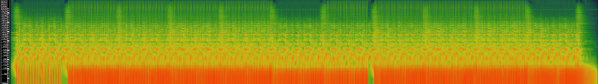
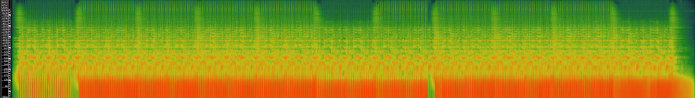

Week 8: Music as Sound
Task 1: Music Metadata
Music Metadata Table
Below details some of the important technical and non-technical metadata regarding my three tracks.
Task 2: Waveforms and Spectograms:
Track 1: Breathing, by Spectacular Sound Productions.


Track 2: Inspirational Outlook, by Scott Holmes.
 

Track 3: Frontline, by Yung Karts.


Task 3: Time Frequency Analysis versus Waveform Based Analysis
Time frequency analysis as opposed to waveform based analysis is more beneficial and allows for more accurate analyis. This because it is applicable
to the duration of sound frequencies produced, whereas waveform analysis suggests that the sounds observed are continuous. It also helps to identify
differing durations of notes and pitches, simultaneously. It allows for analysis at different frequencies; allowing for differing times and frequencies
to be visualised together, allowing a specific aspect of sound to be analysed, known as'Frame-by-frame analysis'. For example, in the first track that I
extracted features from, there is quite a consistent amplitude of sound, but where the pitch is increasing (mid song) can be pinpointed. More sound
complexities are visible with this spectogram that are not visible in the waveform. Also with a spectogram, the intensity of colours help to identify where
there is higher energy in the sounds produced.
Week 7<
Index
>Week 9